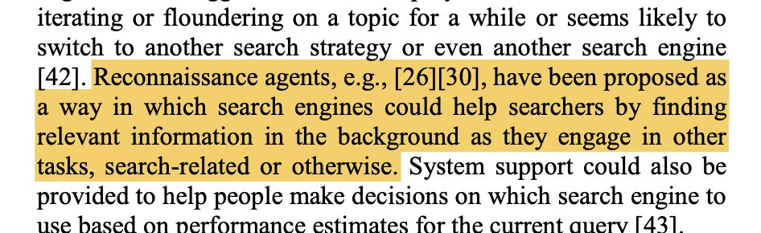
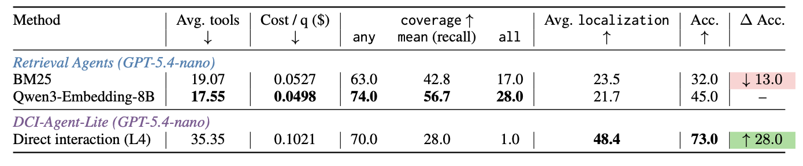
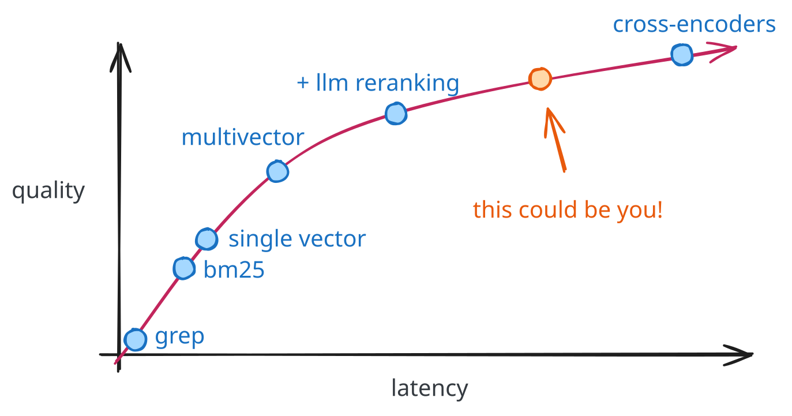
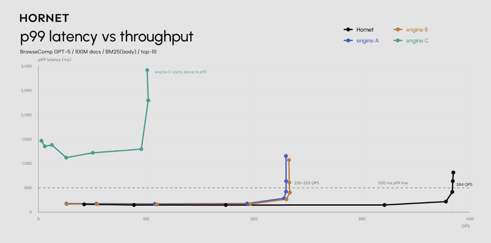

retrieval
Searching, Fast and Slow
Revisiting "Slow Search" in the age of agentic retrieval.
Agentic retrieval is largely a bet that a model executing more search steps yields a better, more informed answer. You’re trading wall clock time for recall. In which case, why not lean in and trade per-query latency for even better results?
There are two competing philosophies for agentic retrieval:
- latency doesn’t matter in agentic search because the user is already willing to wait, and the models themselves don’t care about latency; and
- agents are more sensitive to latency and scalability issues, because they will issue far more queries than humans ever could.
I think that (1) is correct if you’re focusing specifically on per-query latency, and (2) is right if you’re talking about throughput and “whole task time”.
This debate is not new – the 2013 “Slow Search” paper poses the questions: what would search look like if we didn’t care about latency, and under what circumstances would users accept that? [2] Today’s debate has the added twist that the (immediate? intermediate?) search consumers are not humans.
Notably, they even proposed search agents (in 2013!!) as an example of slow search, answering queries “in the background as [searchers] engage in other tasks, search-related or otherwise.” (You can read my full notes on the paper here; it’s a delightful and very prescient paper!)

Should Search For Agents Be Fast?
For a lot of search tasks, no! Most agentic search tasks are bottlenecked on retrieval quality more than LLM quality. Consider the case of BrowseComp-Plus. Reason-ModernColBERT from LightOnAI shows that better retrieval is a rising tide that lifts all boats (model sizes):
 Figure 1: Note the x-axis is the number of tool calls, and that drops to \~13 while quality improves, just by using better retrievers.
Figure 1: Note the x-axis is the number of tool calls, and that drops to \~13 while quality improves, just by using better retrievers.
As an alternative, consider the Direct Corpus Interaction (DCI) paper, where they gave an agent access to grep and bash [3]. They show a similar increase in performance, but with more than double the tool calls and double the cost.

Figure 2: Using only grep + bash, the number of tool calls goes up to 35 for the same benchmark!For agentic retrieval, both time and cost are primarily driven by the LLM itself. Every time you call a tool, you’re paying the cached input cost and waiting the generation time for the model’s intermediate reasoning.
So you can end up waiting longer if you use lower-latency search. And not only are you waiting longer, you’re paying more for the privilege.
Test-Time Compute in Retrieval
The goal when trading off latency for quality is to reduce the amount of work it takes [for your agent to satisfy its information need]. But how do you make that trade-off? Reasoning models showed that LLMs can trade latency/compute for a higher-quality answer. Letting the model spend more tokens scales logarithmically with the accuracy of the answer on hard math/coding tasks.
This trade-off also exists in retrieval. There is a Pareto frontier of retrieval quality depending on how much time/compute you’re willing to spend per query:

(Note: this is just a rough approximation, please don’t come after me! 😀 There are also so many simplifying assumptions being made here that dissecting this figure would warrant its own blog post.)Broadly, you make that trade-off by moving to a better (and often larger) model, and by moving further up and to the right along this graph. If you’re rolling your own retrieval it takes more effort to deploy a multivector approach than a single vector approach. Similarly, building a two-stage retriever with an LLM-reranker at the end requires putting the infrastructure in place for LLM inference. These are harder than calling an embedding API. There are companies today who will just handle this for you, if you’d prefer not to roll your own, though!
Aside
Why does latency trade off so cleanly for quality? It mostly has to do with the retrieval research community. Think of it like an evolutionary process whereby a slower technique can only survive by being higher quality. So most things that have stuck around, like building multi-stage rankers, push you up and to the right along this frontier.
Trading Query Latency for Throughput
Trading latency for quality is not the only trade you might consider. For instance, hornet.dev is betting that retrieval engines designed for agents should be focused on throughput rather than latency.
The core bet boils down to “agents issue more queries than humans and aren’t as latency sensitive.” Makes sense to me, especially as we see more parallel tool calls and subagents.

Figure 3: the hornet retrieval engine focuses on delivering high QPS.We Should Do More Slow Search Research
One of the interesting results from the Slow Search paper is that most people really aren’t willing to wait for better results.
> Only 36 (25.5%) participants could imagine waiting for the best possible results longer than they actively searched. […] The remaining 86 (61.0%) of participants had difficulty envisioning a search engine that would sacrifice speed for quality.
Findings like this have driven a relentless focus on search latency in the IR community over the years. However, agents are the perfect slow searchers; they’re infinitely patient, and cheaper/better to run if you can give them better results.
So we as a research community should be thinking about how to satisfy this new customer. Try some out-there but slow ideas! Maybe you can solve Obliq-Bench?
If this is a research area that interests you, read this mini-essay from Ben Clavié, where he argues that the IR community focuses too strongly on engineering and scalability and not enough on neat, novel ideas:
I have a deeper note to make about this: we need to rethink how we approach retrieval research if we want to have an LLM moment.
— Ben Clavié (@bclavie) June 3, 2026
I think a problem we have as a sub-field is a lack of openness to early research that might be paving the way to what comes next, even if it's not all… https://t.co/741AUEBtWL
References
- Antoine Chaffin. (2025). Reason-ModernColBERT. https://huggingface.co/lightonai/Reason-ModernColBERT
- Jaime Teevan, Kevyn Collins-Thompson, Ryen W White, Susan T Dumais, Yubin Kim. (2013). Slow search: Information retrieval without time constraints. Proceedings of the Symposium on Human-Computer Interaction and Information Retrieval.
- Zhuofeng Li, Haoxiang Zhang, Cong Wei, Pan Lu, Ping Nie, Yi Lu, Yuyang Bai, Shangbin Feng, Hangxiao Zhu, Ming Zhong, others. (2026). Beyond semantic similarity: Rethinking retrieval for agentic search via direct corpus interaction. arXiv preprint arXiv:2605.05242.